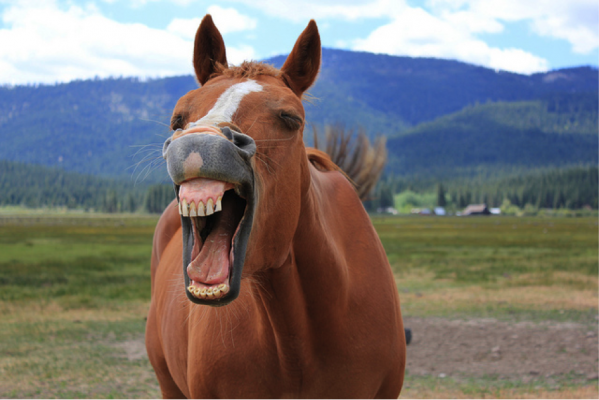

Een gegeven Paard niet in de Bek kijken
"Een gegeven paard kijk je niet in de bek" wordt gebruikt om aan te geven dat men niet kritisch moet zijn op cadeaus of geschenken die men ontvangt. Het impliceert dat men dankbaar moet zijn voor wat men krijgt, ongeacht de waarde ervan.
Oorsprong
De oorsprong van dit spreekwoord ligt in de wereld van paardenhandel, waarbij de koper de kwaliteit van een paard kon beoordelen door naar zijn tanden te kijken. Het idee is dat het onbeleefd en ondankbaar is om kritiek te hebben op iets dat gratis wordt aangeboden.
Gebruik
Dit spreekwoord wordt vaak gebruikt om aan te geven dat men dankbaar moet zijn voor cadeaus of gunsten, ongeacht hun waarde of nut. Het wordt zowel in informele als formele contexten gebruikt.
Voorbeelden
- Hoewel het niet precies was wat ze wilde, wist ze dat ze het moest accepteren, want een gegeven paard kijk je niet in de bek.
- Hij accepteerde het geschenk met een glimlach, zich bewust van het spreekwoord: een gegeven paard kijk je niet in de bek.
Vertalingen
Hoewel dit spreekwoord specifiek is voor de Nederlandse taal, zijn er vergelijkbare uitdrukkingen in andere talen. In het Engels wordt soms gezegd: don't look a gift horse in the mouth (kijk een gegeven paard niet in de mond).